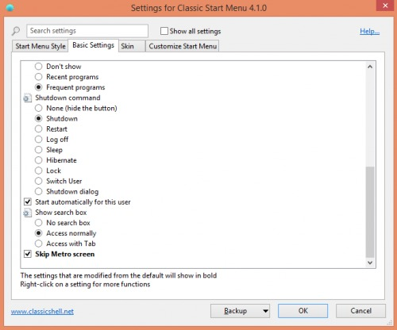
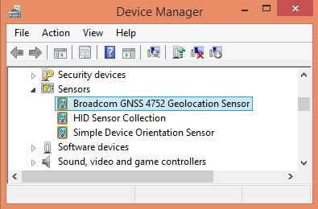
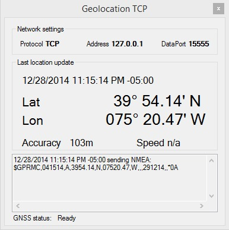
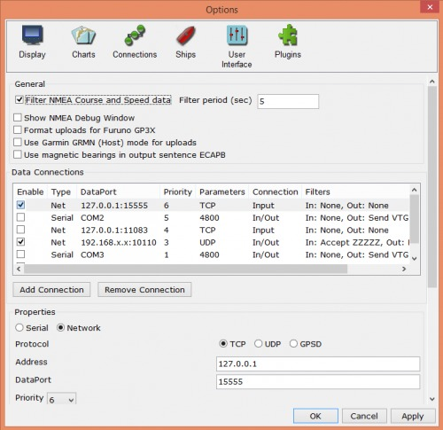

It is no wonder that iPads and Android tablets have become so popular. They offer superior ergonomics vs. laptops in many settings, including areas with limited space and power such as boat cabins and cockpits. Tablets usually offer superior battery life, lower power consumption, and are easier to waterproof via inexpensive pouches.
With the recent release of OpenCPN for Android on the Google Play Store, a huge selection of phones and tablets are now able to run OpenCPN very easily.
OpenCPN can also run very nicely on Windows 8 tablets, many of which are available at very low cost. Here are some suggestions for running on Windows tablets:
Running OpenCPN on a Windows 8 tablet
Although Windows 8 tablets are not as common as iPads or Android, they have the advantage of running on the exact same Windows platform as PCs and laptops. This means you can install OpenCPN onto a tablet using the same installer that is used for Windows laptops and desktops. Just dowload the installer and appropriate charts, run the installer, and select the chart location just like you would on any PC.
Because of differences in Windows 8 vs. prior Windows versions, and configuration differences in the tablet hardware, your user experience with OpenCPN on a Windows tablet may be enhanced by considering these optional tips and tricks:
1. Install the Classic Shell free software. This facilitates using the tablet with traditional Windows desktop programs, and will make the Win8 environment more familiar for those who are coming from XP, Vista, or Win7. You can still bring up the Start Screen to use the newer “Metro” tablet apps, but Classic Shell restores the familiar Start menu that Windows users are accustomed to having.

2. Check Device Manager-Sensors to verify whether your tablet has a GNSS Geolocation sensor. If so, your tablet has GPS capabilities already built in. (Some tablets have been discovered to have GPS even though the specifications may not mention it.)

However, the Windows 8 tablets initially are configured in a way that only Metro apps can see the built-in GPS. In order to overcome this limitation, try installing petrsimon's excellent GeolocationTCP utility. Set this utility to launch at bootup so it's always there by putting a shortcut in the Startup folder created by Classic Shell.

Then you need to configure OpenCPN to receive the NMEA data over the appropriate TCP port.

3. GPS If you do not have an internal GPS and want one to interface with your tablet, I recommend a Bluetooth GPS transmitter instead of a wired dongle or puck. There are Android and iPhone apps that will transmit from your smartphone, or you can purchase a freestanding Bluetooth GPS made by GlobalSat or others. Transmitting GPS to the tablet via Bluetooth also facilitates putting the tablet into a waterproof pouch. Some have reported that hanging a USB connector off the side of the tablet may weaken the microUSB plug over time.
4. The excellent form factor of the tablet opens up some great possibilities for use in the cockpit, if you select a tablet with a sufficiently bright screen. A suggested tablet model and more comprehensive list of tips can be found on this message thread.
OpenCPN runs remarkably well on a tablet with practically no modifications. Microsoft has emulated many mouse functions in their OS. The right-click context menus are emulated by tap-hold. Zooming and unzooming in OpenCPN is accomplished by pinching gesture, or using the magnifying glass icons in the toolbar.
Mouse hover (aka “rollover”) is not generally supported on tablets, and accidentally tapping the chart can lead to unexpected re-centering of the chart. To address this and other tablet needs, OpenCPN adds some some custom features available in the Options-User Interface menu:
Activating “Enable Touchscreen Interface” alters the effect of tapping/clicking on the chart in the following ways:
-Suppresses re-centering of the chart by tapping (you need to tap-drag to pan the chart)
-Tapping waypoint selects it for subsequent dragging
-Tapping Routes and AIS targets shows popup info
-Tapping tide/current icons shows appropriate dialog
Here are some additional behaviors with “Enable Touchscreen Interface” activated:
-Optimize several common dialogs for screen rotation, i.e. landscape or portrait
-Route Create workflow: “Done” by clicking toolbar “Route” icon, or normal context menu.
-Toolbar navigation items (e.g. Zoom/Scale) are available during route creation.
-Chart drag (a.k.a. swipe) is available during route creation.
-Routepoint/Waypoint edit by drag is supported.
-Increase pixel select radius, to allow for finger tip selection of routes/waypoints
A second option, “Enable Tablet Scaled Graphics Interface” can improve the display, especially on tablets with high pixel density. At present, Windows tablets are generally lower pixel density than Android and iPad, but this may change with future hardware. This option does the following:
-Increase toolbar icon size
-Increase context menu text item size
-Increase selectable item sizes for several common dialogs
Tablet Scaled Graphics may enlarge the toolbar icons too much for some tastes, especially on small tablets with limited screen space. As an alternative, Microsoft provides a Magnifier utility that temporarily zooms the view and allows for panning across the enlarged screen. It can be found in Start-All Programs-Windows Ease of Access (if you have Classis Shell installed), or by searching the Start Page in the Modern interface. I recommend pinning a shortcut to the taskbar for quick one-tap access. While zooming the OpenCPN menu can enlarge many chart features, Magnifier can enlarge additional elements like the very small depth soundings and the green-over-black status text displayed by the Active Route:
* Read more about the XTE in Connections Add a Serial Connection, “APB bearing precision”
Following are Dave's comments on “Enable Tablet Scaled Graphics Interface”:
- It is important that the screen width dimension be properly set for this option to work.
- Manual override of screen width can be done at
Options→Display→Advanced Options Settings-Display-Advanced.
- Dave found, on his W8.1 tablet, that the automatically calculated size value was wrong, leading to extra large toolbar icons. Easy to correct with a physical measurement.
In the “Tablet Scaled Graphics Interface”, the toolbar icon target minimum size is 9mm square.
This is the generally accepted minimum button size for several mobile platforms.
Other Tablets and Operating System details.
OpenCPN for Windows also runs successfully on: